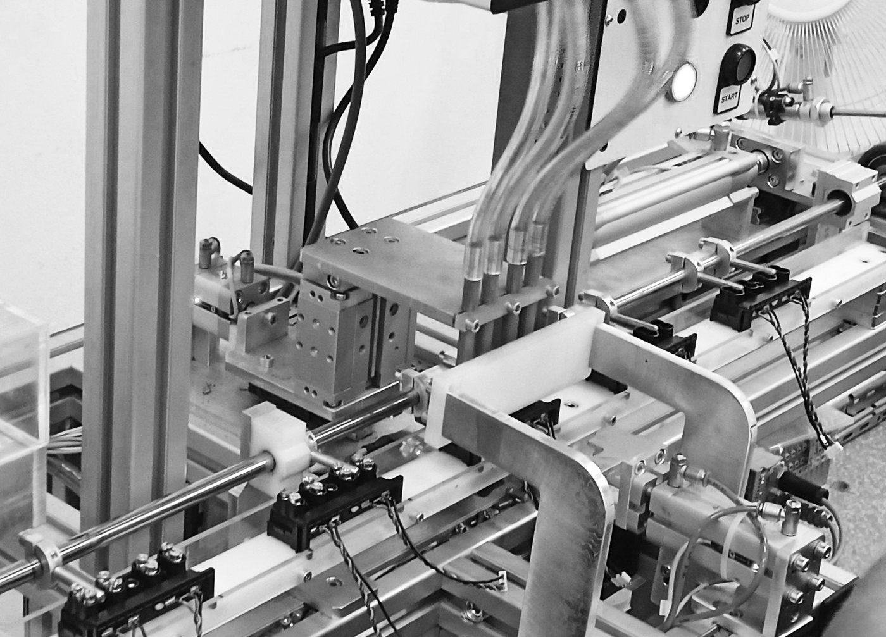

<!doctype html>
<html lang="uk">
<head>
<meta charset="utf-8">
<meta name="viewport" content="width=device-width, initial-scale=1">
<title>Лічильники на замовлення: розробка та виробництво — НІК</title>
<meta name="description" content="Адаптуємо лічильники та пристрої під вимоги вашого ринку чи проєкту: інтерфейси, протоколи, корпус, функції. Власне конструкторське бюро та виробництво.">
<meta name="robots" content="noindex">
<link rel="preconnect" href="https://fonts.googleapis.com">
<link rel="preconnect" href="https://fonts.gstatic.com" crossorigin="">
<link href="https://fonts.googleapis.com/css2?family=JetBrains+Mono:wght@400;500;600&amp;display=swap" rel="stylesheet">
<link rel="stylesheet" href="style.css">

<script src="https://cdn.jsdelivr.net/npm/morphdom@2.7.4/dist/morphdom-umd.min.js"></script>
<script src="runtime.js"></script>
<script src="shell.js"></script>
</head>
<body>
<div id="app"></div>
<script type="text/x-template" id="tpl">
<shell-top></shell-top>
<main id="main">
<section class="phead">
  <div class="wrap">
    <nav aria-label="Навігаційний ланцюжок"><ol class="crumbs"><li><a href="index.html">Головна</a></li><li><a href="catalog.html">Каталог</a></li><li><a href="services.html">Послуги</a></li><li><span aria-current="page">Розробка на замовлення</span></li></ol></nav>
    <h1>Лічильники та пристрої на замовлення</h1>
    <p class="lead">Увесь цикл проходить <b class="kw">під нашим контролем</b>: власне конструкторське бюро, SMT-лінія монтажу друкованих плат, лиття пластикових корпусів, складання, повірка, випробування та сервісний центр.</p>
    <p class="lead">Завдяки цьому ми <b class="kw">швидко адаптуємо</b> прилади під вимоги конкретного ринку чи замовника&nbsp;— або створюємо новий пристрій під ваше завдання.</p>
  </div>
</section>

<div class="wrap pbody">
  <svg class="cu-sprite" aria-hidden="true"><defs><symbol id="cu-link" viewBox="0 0 24 24"><path d="M1.5 9a15 15 0 0 1 21 0"></path><path d="M5 12.5a10 10 0 0 1 14 0"></path><path d="M8.5 16a5 5 0 0 1 7 0"></path><circle cx="12" cy="19.5" r="1"></circle></symbol><symbol id="cu-proto" viewBox="0 0 24 24"><path d="m12 2 10 5-10 5L2 7Z"></path><path d="m2 12 10 5 10-5"></path><path d="m2 17 10 5 10-5"></path></symbol><symbol id="cu-func" viewBox="0 0 24 24"><path d="M4 21v-7M4 10V3M12 21v-9M12 8V3M20 21v-5M20 12V3M1 14h6M9 8h6M17 16h6"></path></symbol><symbol id="cu-case" viewBox="0 0 24 24"><path d="M21 8 12 3 3 8v8l9 5 9-5Z"></path><path d="m3 8 9 5 9-5M12 13v8"></path></symbol><symbol id="cu-tag" viewBox="0 0 24 24"><path d="M20.6 13.4 13.4 20.6a2 2 0 0 1-2.8 0L3 13V3h10l7.6 7.6a2 2 0 0 1 0 2.8Z"></path><circle cx="7.5" cy="7.5" r="1.5"></circle></symbol><symbol id="cu-cert" viewBox="0 0 24 24"><circle cx="12" cy="8" r="6"></circle><path d="M8.5 13.5 7 22l5-3 5 3-1.5-8.5"></path></symbol></defs></svg>
  <div class="shead"><div><h2 class="h2">Що можна адаптувати</h2></div></div>
  <div class="ngrid three">
    <sc-for list="{{items}}" as="c" hint-placeholder-count="6">
      <article class="cert"><span class="cu-icon"><svg width="28" height="28" fill="none" stroke="currentColor" stroke-width="2" stroke-linecap="round" stroke-linejoin="round" aria-hidden="true"><use href="#cu-{{c.k}}"></use></svg></span><h3>{{c.t}}</h3><p class="cd">{{c.d}}</p></article>
    </sc-for>
  </div>
</div>

<section class="sec on-paper cu-band">
  <div class="wrap">
    <div class="about-cols cu-split"><figure class="cu-photo"></figure><h2 class="h2">Як ми створюємо пристрій</h2><div class="art"><ol class="nums"><li><span><b>Аналіз вимог.</b> Вивчаємо задачу та готуємо технічне завдання.</span></li><li><span><b>Електроніка.</b> Розробляємо плати та апаратну частину.</span></li><li><span><b>Корпус.</b> Створюємо 3D-модель, прес-форму та робимо пробне лиття.</span></li><li><span><b>Програмне забезпечення.</b> Тестове, виробниче та ПЗ верхнього рівня.</span></li><li><span><b>Випробування та пробна партія.</b> Перевіряємо апаратну частину й функції, готуємо технічну документацію.</span></li><li><span><b>Сертифікація.</b> Підтверджуємо відповідність вимогам цільового ринку.</span></li><li><span><b>Серійне виробництво.</b></span></li></ol></div></div>
  </div>
</section>

<section class="wrap band-sec">
  <div class="band">
    <div><h2>Опишіть задачу&nbsp;— наші інженери запропонують рішення під ваші вимоги</h2></div>
    <a href="index.html#contact" class="btn btn-red">Обговорити задачу<svg width="18" height="18" viewBox="0 0 24 24" fill="none" stroke="currentColor" stroke-width="2.2" stroke-linecap="round" stroke-linejoin="round" aria-hidden="true"><path d="M5 12h14M13 6l6 6-6 6"></path></svg></a>
  </div>
</section>
</main>
<shell-bottom></shell-bottom>
</script>
<script>
window.DC_BLOBS = {};
class Component extends DCLogic {
  constructor(props) {
    super(props);
    this.state = { cookie: true, menu: false };
  }
  renderVals() {
    return Object.assign(this.base(this.state), {
      items: [
        { t: 'Зв’язок', k: 'link', d: 'Інтерфейси PLC, GSM/LTE, RF, RS-485 та їх поєднання.' },
        { t: 'Протоколи', k: 'proto', d: 'Підтримка DLMS/COSEM та IDIS.' },
        { t: 'Функції', k: 'func', d: 'Тарифи та зони, передплата, реле відключення навантаження, захист від втручань.' },
        { t: 'Корпус', k: 'case', d: 'Власна розробка прес-форм і лиття.' },
        { t: 'Маркування та пакування', k: 'tag', d: 'Під вимоги замовника.' },
        { t: 'Сертифікація', k: 'cert', d: 'Лічильники NIK мають сертифікати CE, CCC, IDIS та DLMS. Готуємо пристрій до сертифікації на цільовому ринку.' }
      ]
    });
  }
}

DC.mount(Component);
</script>
</body>
</html>
